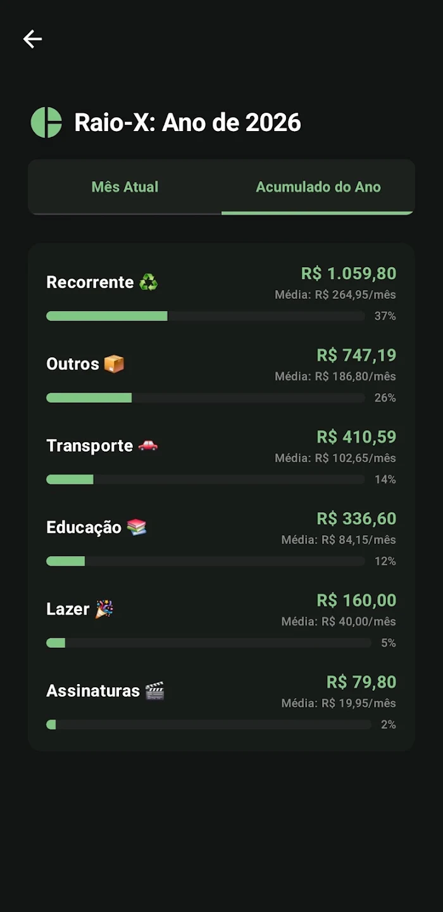
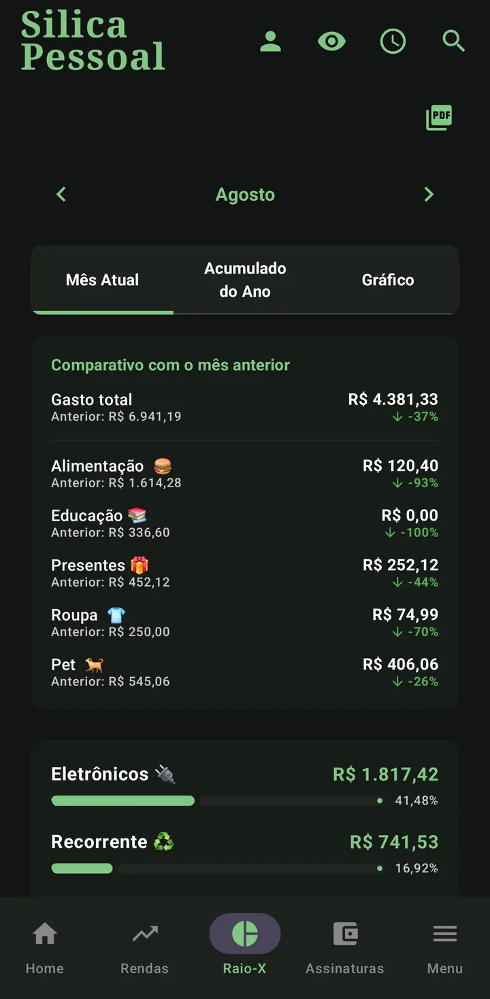
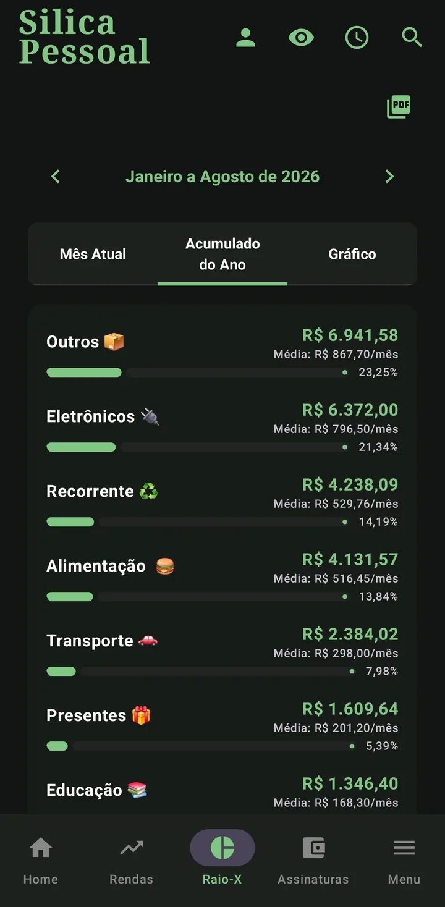

Raio-X: para onde vai o seu dinheiro
X-Ray: where your money goes
Agrupa gastos e lucros por categoria, com médias e percentuais, no mês ou no acumulado do ano.
Groups spending and profit by category, with averages and percentages, monthly or year-to-date.
Gastos por categoria
Spending by category
Cada categoria vira uma barra com o total, a média mensal e o percentual do todo. Toque numa categoria (Pessoal/Negócios) ou no nome do Gerente (Vendas) para expandir e ver os lançamentos que compõem aquele valor.
Each category becomes a bar with the total, the monthly average and the percentage of the whole. Tap a category (Personal/Business) or the Manager's name (Sales) to expand and see the entries behind that value.

Mês atual vs acumulado do ano
Current month vs year-to-date
Alterne entre Mês Atual e Acumulado do Ano no topo. Deslize a tela lateralmente para navegar entre os meses sem sair do Raio-X. O mês atual ainda traz o comparativo com o mês anterior, categoria a categoria, com a variação percentual.
Switch between Current Month and Year-to-date at the top. Swipe sideways to move between months without leaving the X-Ray. The current month also brings a comparison with the previous month, category by category, with the percentage change.


No perfil Vendas: ROI & Conversão
In Sales: ROI & Conversion
- ROI: quanto seu dinheiro rendeu sobre o custo do estoque.
- ROI: how much your money earned over the stock cost.
- Conversão em Caixa: quanto do que você vendeu já entrou de fato no caixa.
- Cash Conversion: how much of what you sold has actually reached the cash.
No perfil Serviços
In the Services profile
O Serviços tem um Raio-X próprio: recebido no mês, a receber, lucro estimado, ticket médio, faturamento por categoria, mix de formas de pagamento, taxa de conversão de orçamento em serviço e top clientes. Veja em Serviços.
Services has its own X-Ray: month received, to receive, estimated profit, average ticket, revenue by category, payment-method mix, quote-to-service conversion and top clients. See Services.
Relatório em PDF
PDF report
No perfil Vendas, o ícone de PDF gera o relatório do Gerente: escolha o vendedor, o período e o % de comissão. Cada parcela entra no mês do vencimento, separando a comissão já realizada da comissão a receber.
In the Sales profile, the PDF icon generates the Manager report: choose the seller, the period and the commission %. Each installment lands in its due month, separating realized commission from commission to receive.